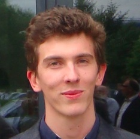

Affiliation
Research scientist, Google DeepMind, Paris.
Contact
mblondel AT google DOT com (work) or mathieu AT thisdomain DOT org (personal)
Short bio
I obtained my PhD in machine learning from Kobe University, Japan, in 2013. From 2013 to 2019, I was a research scientist at NTT, in the Communication Science Laboratories, in Kyoto, Japan. Since 2019, I am a research scientist at Google DeepMind, in Paris, France.